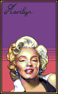

credits
fonts
Divide by Zero
(i only use Epilog, Pinball Data, and Tombats Smilies)
Bokonon
—i made this one!
palette
i'm using the same palette as aseprite's default one,
DB32
. it's just so pretty!

work of dawnbringer